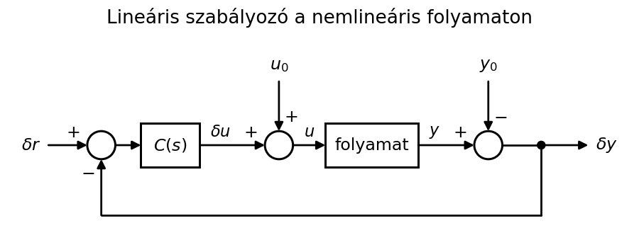
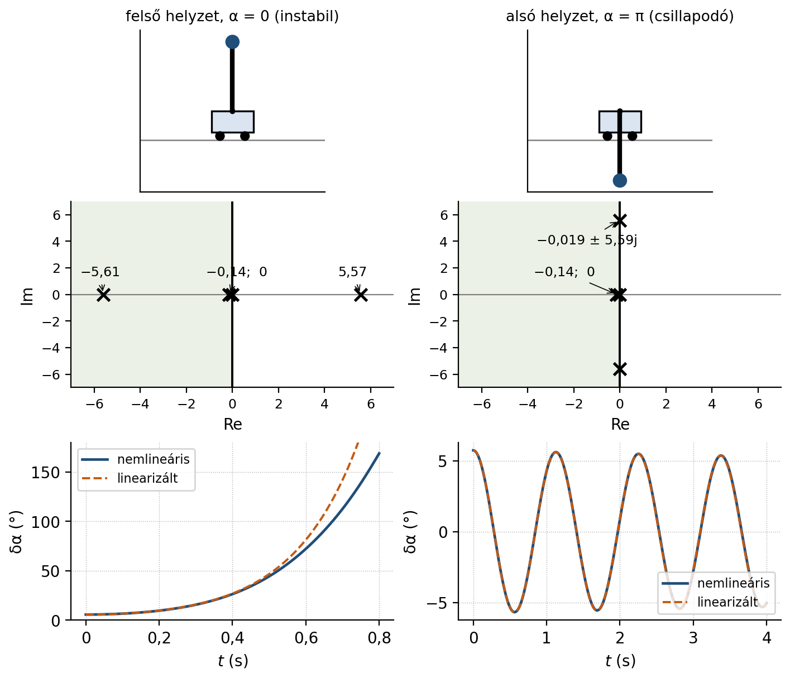
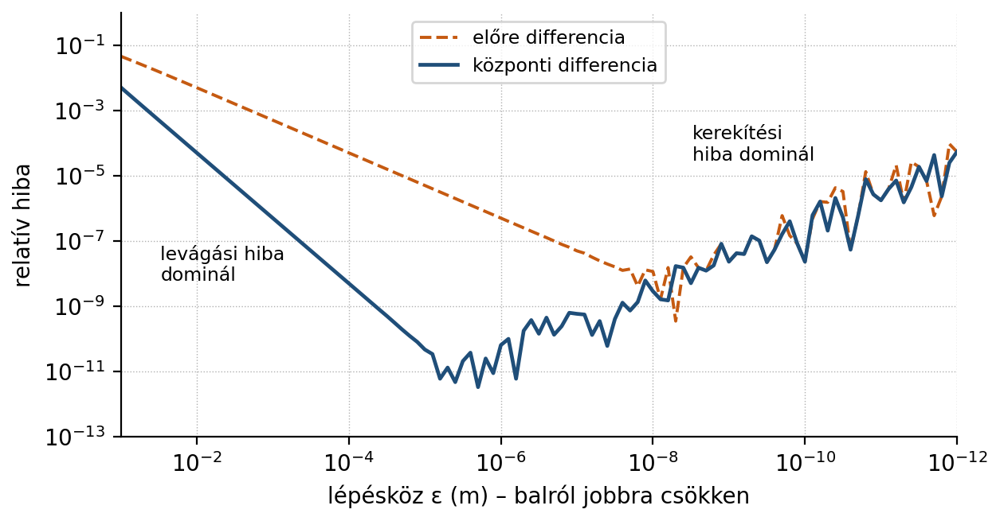

A Hő- és folyadékrendszerek alfejezet
tartályát
m-en akarjuk tartani. A könyv szinte teljes eszköztára (átviteli
függvények, pólusok, Bode-diagram, állapotvisszacsatolás, LQR)
lineáris modellre épül, a tartályé viszont a
miatt nemlineáris, a kocsis ingáé pedig tele van
-val.
Eldobjuk akkor ezeket az eszközöket?
Nem. A szabályozás dolga éppen az, hogy a rendszert egy
munkapont közelében tartsa. Kis kitérésekre minden sima
függvény egyenesnek látszik, a nemlineáris modell ott lineárissal
helyettesíthető. Ez a linearizálás
(linearization). Cserébe két kérdésre válaszolnunk kell: melyik
pont körül, és meddig érvényes a közelítés?
5.1.2 Szemlélet
Rajzoljuk fel, milyen szintre áll be a tartály az egyes
befolyásoknál: ez a statikus jelleggörbe, itt egy
parabola. A
L/s befolyásnál (ez tartja a
m-es szintet) a görbe érintője a linearizált modell végértéke.
Statikus változat (mint a PDF-ben)
A tartály statikus jelleggörbéje az érintővel, és a
nemlineáris és linearizált időválaszok
Mielőtt tovább olvasol, tippeld meg: ha a befolyást 90%-kal
csökkentjük, mit mond a lineáris modell? A görbére nézve látod: az
érintő a
tengely felé a negatív szintek tartományába fut ki. Az
egyenes csak a munkapont közelében jó.
5.1.3 Egyensúlyi pont
Definíció. Az
rendszer egyensúlyi pontja (equilibrium) az
olyan
pár, amelyre
.
Szavakban: ha a rendszert
-ból
indítjuk, és a bemenet
marad, semmi nem változik. Az egyensúlyi pont kiszámítása algebrai
feladat. Néhány példa:
Tartály:
,
tetszőleges
szinthez van
(egyensúlyi családot kapunk).
Kocsis inga
():
vagy
,
,
a kocsi helye viszont tetszőleges.
Drón:
,
,
bármely magasságban.
Az egyensúly stabilitása külön kérdés: a kis zavarás
elhal-e, vagy nő?
5.1.3.1 Eltérésváltozók
A linearizálást az egyensúlyi pontból mért eltérésekkel írjuk:
Mivel
állandó,
.
A szabályozó is eltérésben „gondolkodik”: a beavatkozás
.
5.1.3.2 Mit lát a szabályozó?
A valódi folyamat abszolút értékekkel dolgozik (méter, liter per
másodperc), a lineáris modell és a rá tervezett szabályozó eltérésekkel.
A kettő között két egyszerű összeadás a híd:

Lineáris szabályozó a nemlineáris
folyamaton - A munkapont bemenetét hozzáadjuk, a kimenet munkaponti
értékét levonjuk; a szabályozó csak eltéréseket lát.
Ha az
pontatlan (például a
m-hez tartozó befolyást csak közelítőleg ismerjük), a hibát a
visszacsatolásnak, jellemzően az integráló tagnak kell pótolnia (lásd az
Arányos és integráló hatás alfejezetet).
5.1.4 Egyváltozós
Taylor-linearizálás
Legyen
skalár. Az
függvényt a munkapont körül Taylor-sorba fejtjük:
A deriváltakat a munkapontban vesszük. Az első tag nulla (egyensúly),
a másod- és magasabb rendű tagokat elhagyjuk:
A tartálynál
,
ezért
A linearizált tartály tehát elsőrendű rendszer,
időállandóval és
statikus erősítéssel. Mindkettő
-lal
arányos: a modell a munkaponttól függ.
Figyeld meg a negatív
-t:
a szint növelése növeli a kifolyást, ez visszafelé hat, ezért a tartály
önbeálló (stabil). Fizikailag ugyanezt látod, ha egy
kicsit több vizet öntesz bele: a szint megemelkedik, a kifolyás megnő,
és a többlet lassan elfolyik, amíg helyre nem áll az egyensúly.
5.1.4.1 Mekkora a hiba?
Az elhagyott tag becsülhető:
;
a másodrendű és az elsőrendű tag aránya
.
A statikus végértékre pontos képlet is adódik, mert
egzaktul másodfokú.
ugrásnál a valódi szintváltozás
,
a linearizált
,
a relatív hiba
Egy
%-os
ugrásnál a végérték-változás hibája kb. 5%, 50%-osnál már 20% (felfelé).
Az érvényességi tartomány tehát nem abszolút: a megengedett
hibából következik.
5.1.5 Több változó:
Jacobi-mátrixok
Ha
komponensű,
és
elemű, a deriváltak a Jacobi-mátrixokba
rendeződnek:
mérete
,
-é
;
a kimenetre ugyanígy
()
és
.
Az
sajátértékei a linearizált rendszer pólusai: ha mind a
bal félsíkon van, a kis kitérések lecsengenek („a pólus dönt”), ha
valamelyik valós része pozitív, a kitérés nő. A kapcsolat a nemlineáris
rendszer stabilitásával (Ljapunov indirekt módszere) a Ljapunov-stabilitás alfejezet témája; ott derül ki
az is, mi történik, ha nulla valós részű sajátérték van.
5.1.5.1 Bemelegítő példa: rögzített
csuklójú inga
Mielőtt a négyállapotú ingához nyúlnánk, nézzünk egy kétállapotút.
Egy
m hosszú, csillapított matematikai inga a függőleges
alsó helyzettől mért
szöggel:
,
1/s. Az állapot
,
tehát
.
A deriváltak:
Egyensúlyban
és
.
(lent):
,
:
csillapodó lengés.
(fent):
,
és
:
egy pozitív gyök, instabil.
Ugyanaz a nemlineáris egyenlet két teljesen eltérő lineáris rendszert
ad, pusztán a
előjele miatt. A kocsis ingánál ugyanez történik, csak a csatolás miatt
több elem érintett.
A második egyenlet jobb oldalán a gravitáció áll: pozitív
mellett a pozitív
tag a rudat tovább dönti. Ez a destabilizáló hatás
okozza majd a pozitív sajátértéket.
A
-es
rendszert a gyorsulásokra megoldva
(
a determináns):
Az
állapottal:
Az alsó helyzetben
,
,
,
és az egyenletek:
Most a gravitáció visszatérít. Mielőtt tovább olvasol, tippeld meg,
mely mátrixelemek váltanak előjelet! A gravitáció és a csatolás
előjelfordulása miatt néhány elem megfordul:
marad, de
,
,
.

A kocsis inga két egyensúlyi helyzete, a linearizált modell
sajátértékei és a kis kitérés
A felső helyzetben a
sajátérték instabilitást jelent: a kitérés kb.
szerint nő, a duplázódási idő
s. Ez szabja meg, milyen gyorsnak kell lennie a szabályozónak. Az alsó
helyzetben a komplex pár gyengén csillapodó lengést
(
rad/s) ad. Mindkét esetben van egy nulla sajátérték: a
kocsi helye integrátor, bármelyik pozíció egyensúly.
Bonyolult modellnél a deriváltakat véges differenciával számoljuk. A
központi differencia
-edik
oszlopa:
ahol
a
-edik
egységvektor. A hibája
-tel
arányos (az előre differenciáé csak
-nal),
de túl kis
-nál
a két közel egyenlő szám kivonása a lebegőpontos kerekítési hibát
nagyítja fel. A jó lépésköz dupla pontosságnál tipikusan
–
körüli (a változók nagyságrendjétől függ). A
models.numerical_jacobian ezt a központi sémát használja,
alaplépéssel.

A numerikus derivált relatív hibája a lépésköz
függvényében
Mindig ellenőrizd: vesd össze egy kézzel levezetett elemmel, vagy a
lineáris modell kis kitérésű szimulációját a nemlineárissal.
Egy
m-nél hangolt szabályozó
m-nél egy háromszor gyorsabb, háromszor kisebb erősítésű folyamatot lát.
Az erősítésütemezés (gain scheduling) lényege:
több munkapontban linearizálunk, mindegyikre tervezünk, és a mért
ütemező változó (itt
)
szerint váltunk vagy interpolálunk a paraméterek között. Feltétele, hogy
az ütemező változó lassan változzon a zárt kör
dinamikájához képest; a gyors átmenetekre a módszer nem ad
garanciát.
Előzetesként egy számpélda, hogy lásd, mit jelent az ütemezés.
PI-szabályozónál (arányos és integráló tag, lásd Arányos és integráló hatás) a
és
erősítést úgy választhatjuk, hogy a zárt kör karakterisztikus polinomja
mindenhol
legyen. A linearizált tartályra ebből
és
adódik (controlkit.nonlinear.tank_linear_pi).
rad/s mellett
értéke
m-nél
,
m-nél
,
m-nél
(m²/s), míg
mindenhol azonos, mert
nem függ a munkaponttól. Az ütemező tehát a mért
alapján a
-t
állítaná.
Továbbvitt eredmény. A munkapontfüggő lineáris
modell és az erősítésütemezés gondolata. Ezt viszi tovább a Visszacsatolásos linearizálás, amely a
nemlinearitást a szabályozóban ejti ki.
5.1.8.1 A linearizálás
receptje
Rögzítsd az állapotot, a bemenetet és az
,
függvényeket.
Válassz munkapontot a feladat alapján (mit akarunk tartani?), és
oldd meg az
egyenletet.
Vezesd be az eltérésváltozókat.
Számold ki a Jacobi-mátrixokat (kézzel, sympy-jal vagy
véges differenciával) a munkapontban.
Vizsgáld meg a sajátértékeket: stabil, instabil, vagy a linearizálás
nem dönt?
Ellenőrizd szimulációval a nemlineáris modellen a várható legnagyobb
kitérésnél, és írd le az érvényességi tartományt.
Az utolsó lépés nem formalitás: a könyv visszatérő elve, hogy
előbb modell, aztán szabályozó, végül ellenőrzés a nemlineáris
modellen.
5.1.9 Kézi számpélda
Linearizáljuk a tartályt
m-nél, és ellenőrizzünk egy
L/s ugrást.
m³/s.
1/s,
1/m².
s.
Linearizált végérték:
m.
Pontos érték:
,
m, változás
m.
Hiba:
%.
A képletből
,
:
egyezik.
5.1.10 Kód
import numpy as npfrom controlkit import models, simfrom controlkit.nonlinear import Tanktank = Tank()h0 =0.5a, b = tank.linearize(h0)A_num, B_num = models.numerical_jacobian(tank.rhs, [h0], tank.q_eq(h0), eps=1e-5)print(f"analitikus: a = {a:.6f}, b = {b:.1f}")print(f"numerikus : a = {A_num[0, 0]:.6f}, b = {B_num[0, 0]:.1f}")for r in (0.1, 0.5, -0.5): q = tank.q_eq(h0) * (1+ r) h_nl = q**2/ (2* tank.g * tank.a_o**2) h_lin = h0 - b * r * tank.q_eq(h0) / a err = ((h_nl - h0) - (h_lin - h0)) / (h_nl - h0)print(f"r = {r:+.1f}: nemlin. {h_nl:.4f} m, lin. {h_lin:.4f} m, hiba {100*err:+.1f} %")
analitikus: a = -0.006264, b = 20.0
numerikus : a = -0.006264, b = 20.0
r = +0.1: nemlin. 0.6050 m, lin. 0.6000 m, hiba +4.8 %
r = +0.5: nemlin. 1.1250 m, lin. 1.0000 m, hiba +20.0 %
r = -0.5: nemlin. 0.1250 m, lin. 0.0000 m, hiba -33.3 %
A kocsis inga két helyzetében a sajátértékek, és a lineáris, illetve
nemlineáris válasz eltérése kis kitérésnél:
Figyeld meg: a lineáris modell jól jósol, amíg a
pillanatnyi szög kicsi; ha a kitérés eléri a több tíz
fokot, a hiba gyorsan nő, függetlenül attól, mennyire kicsiről
indultunk.
5.1.11 Próbáld ki
Alapbeállításnál
(
m) próbáld a kis ugrás (+10%) gombot: a változás hibája
4,8%. A +50%-nál 20%.
A nagy csökkentés (−90%) gombnál a linearizált
modell
m-es szintet jósol, a valódi tartály kb.
mm-ig süllyed.
Húzd a munkapontot
m-re és
m-re: ugyanaz a százalékos ugrás ugyanakkora relatív
hibát ad, de az időállandó ötszörös arányban változik.
Állíts
m,
%
ugrást: a befolyás túllépi a szivattyú korlátját. A modell ezt nem
tudja, neked kell észrevenned.
5.1.12 Tipikus hibák
Nem egyensúlyi pont körül linearizálsz.Tünet: a lineáris modellben konstans tag marad, a szimuláció
„magától elúszik”. Ok:
.
Javítás: előbb számold ki az egyensúlyi
-t.
Abszolút értékeket írsz az eltérés helyére.Tünet: a modell
m-es szintet
m eltérésnek veszi. Ok: összekeverted
-t
és
-t.
Javítás: a szimuláció végén add vissza az
-t,
a szabályozóban vond le.
A linearizált modellt a teljes tartományban
használod.Tünet: negatív szint, nagy szögnél rossz
jóslat. Ok: a Taylor-közelítés lokális. Javítás:
ellenőrizd a nemlineáris modellen a várható legnagyobb kitéréssel.
Stabilitás a nulla sajátértékből.Tünet:
„a nulla sajátérték miatt instabil” vagy „stabil”. Ok: nulla
valós résznél a linearizálás nem dönt. Javítás: itt a nulla a
helyzetintegrátor, értsd meg a fizikai okát; általános esetben
nemlineáris vizsgálat kell.
Túl kicsi differenciálási lépés.Tünet:
zajos, hibás Jacobi-elemek. Ok: kerekítési hiba.
Javítás: központi differencia
körüli, a változó nagyságához igazított lépéssel.
5.1.13 Önellenőrzés
Mi az egyensúlyi pont, és miért nem egyértelmű a kocsis
ingánál?
Miért nulla a Taylor-sor első tagja a linearizáláskor?
Hogyan függ a tartály időállandója a munkaponttól?
Mit jelent a felső helyzet
sajátértéke fizikailag?
Miért nem érdemes nagyon kis lépéssel numerikusan deriválni?
Mikor alkalmazható az erősítésütemezés?
5.1.14 Feladatok
(A) Linearizáld a tartályt
m-nél: add meg
-t,
-t,
-t,
az időállandót és a statikus erősítést (m per L/s).
(A) Az
rendszernél keresd meg az
-hoz
tartozó egyensúlyt, linearizáld, és vesd össze a végértéket
esetén a pontossal.
(B) Egy nyomatékkal hajtott inga:
,
kg·m²,
N·m,
N·m·s,
a felső helyzettől. Mekkora
tartja
-ban?
Linearizáld, és add meg a pólusokat.
(B) Írd fel a drón lineáris modelljét lebegés körül
eltérésváltozókban, és indokold meg, miért pontos a lineáris modell
(telítés nélkül).
(C, programozós) Számold ki a kocsis inga alsó
helyzetének
mátrixát analitikusan (a fenti képletekből) és numerikusan, és nyomtasd
ki a legnagyobb eltérést.
(C, programozós) Az alsó helyzet körül szimuláld a
lineáris és a nemlineáris ingát 5 s-ig
,
és
rad-ról. Mekkora a legnagyobb szögeltérés fokban, és miért nő ilyen
gyorsan?
5.1.15 Rövid összefoglaló
Az egyensúlyi pontban
;
körülötte az eltérésváltozókra
,
ahol
és
a Jacobi-mátrixok, a pólusok
sajátértékei. A tartály linearizálva elsőrendű,
-ja
és erősítése
-lal
arányos, a végérték hibája
.
A felső helyzetű kocsis inga instabil
(),
az alsó gyengén csillapodó. A Jacobi-mátrix központi differenciával is
számolható, de a lépésközt jól kell választani. A munkapontfüggő
modellekből erősítésütemezés építhető. A linearizált modell csak
lokális: mindig ellenőrizni kell a nemlineárison.
5.1.16 Megoldások
5.1.16.1 Válaszok az önellenőrző
kérdésekre
Olyan
,
ahol
;
a kocsi bármely helyen állhat, és a rúd fent vagy lent is lehet.
Mert az egyensúlyi pontban
értéke nulla.
,
a szint négyzetgyökével arányos.
A kitérés
szerint nő, kb.
s alatt duplázódik.
Mert a kivonás kerekítési hibája
-nal
felnagyítódik.
Ha az ütemező változó mérhető, és a zárt körhöz képest lassan
változik.
1.
L/s;
1/s,
;
s; erősítés
m/(m³/s)
m per L/s.
2.
;
,
:
.
-re
.
Pontosan
;
a linearizált érték 4,1%-kal nagyobb.
3. Egyensúly:
N·m. Linearizálva
,
azaz
.
A karakterisztikus egyenlet
,
pólusok
és
:
instabil.
4.
,
:
A modell a telítés kivételével lineáris, a gravitáció csak konstans
eltolás, amelyet a
-változók
elnyelnek: a közelítés pontos, amíg
a
N tartományban van.
5.
M, m, b_c, l, I, g = pend.M, pend.m, pend.b, pend.l, pend.I, 9.81qJ = I * (M + m) + M * m * l**2A_an = np.array([[0, 1, 0, 0], [0, -(I + m*l*l) * b_c / qJ, m*m*g*l*l / qJ, 0], [0, 0, 0, 1], [0, m*l*b_c / qJ, -(M + m) * m*g*l / qJ, 0]])print(f"legnagyobb eltérés: {np.abs(A_an - A_dn).max():.1e}")
δα0 = 0.1 rad: legnagyobb eltérés 0.17°
δα0 = 0.5 rad: legnagyobb eltérés 19.85°
δα0 = 1.0 rad: legnagyobb eltérés 101.94°
A nagy lengés a valóságban lassabb (a
visszatérítő hatása kisebb, mint
-é),
a fáziskülönbség pedig periódusról periódusra összeadódik, ezért a hiba
nem arányos a kitéréssel, hanem sokkal gyorsabban nő.